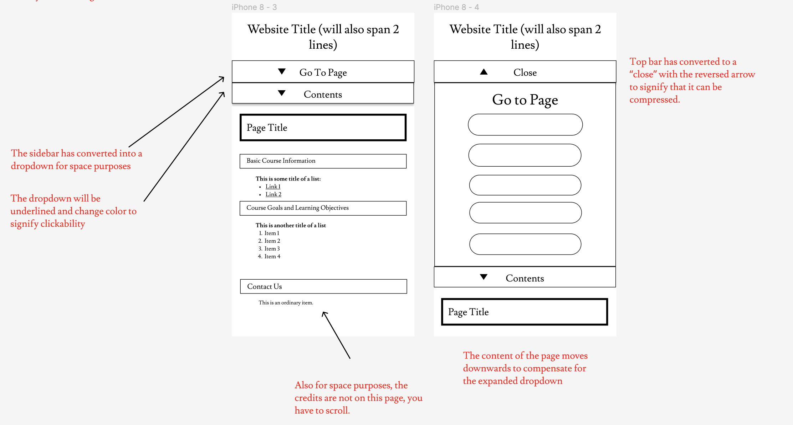

Responsive Redesign of Brown's CS19 Website
HTML/CSS, Spring 2024
This project was an HTML/CSS based project intended to resolve the accessibility issues related to the Brown CS19 course website. I was inspired to do this project because despite spending three years with this course as a student, TA, and Head TA, I still struggled with navigating the website at times.
To revamp this design, I created speed sketches and compiled elements that I liked into a final sketch, created low fidelity, style guides, and high fidelity wireframes in Figma, then deployed my final redesigned webpage in Github Pages here.
Identifying Problems

With accessibility principles in mind, the main issues that I noticed with the CS19 website were the following:
- No UI change to indicate clickability
- The lack of hover and click effects makes it difficult to distinguish between clickable elements (buttons, links) and non-clickable elements (plain labels).
- The lack of responsiveness to screen size
- When opening the website on a mobile page, only half of the page is displayed, and the clickable elements are so small that it is difficult to click on the navigation bar elements with a finger.
- The lack of page hierarchy usage
- The headers and body look identical in font except for the boldness of the headers (which is not very noticeable), resulting in a large chunk of text that is quite overwhelming.
Speed Sketching
To brainstorm ideas to solve these issues, I speed-sketched 9 potential ideas. I then combined the features that I liked from each design into one final sketch before creating a low-fidelity wireframe in Figma.


The final sketch features larger navigation bar elements with representative icons, moving the table of contents to the empty space on the right, and the use of blocked headers for better page hierarchy.
Lo-Fi Wireframes/Hi-Fi Wireframes


When developing my wireframes from my sketches, besides flushing out the precise sizing of the components, I mainly focused on annotating the interactive behavior of the webpage for the desktop version.
I was also prompted to think about how to rearrange the components of my page to fit on a mobile device, as the proportions of the screen are more wide than long.


For the tablet version, I decided to move the table of contents back to the left hand side and the credits to the bottom of the middle section. The idea was to have the left sidebar persist as the user scrolled through the page, while the credits would only be seen when the user scrolled to the bottom (as it was not as essential as the sidebar).
For the phone version, the credits would still go on the bottom, but the navigation bar and contents bar would be compressed into dropdowns.
The Final Product
The final redesigned webpage featured the following changes:
- Larger clickable elements
- The navigation bar and the contents bar feature buttons that can be clicked easily with the finger and mouse instead of small links.
- Components responsive to page size
- When the size of the screen shrinks to certain dimensions, the components of the page rearrange to fit on the screen as demonstrated in the Hi-Fi Prototype.
- Hover and Click Effects
- When hovering and clicking over the elements of the navigation bar, the contents bar, and the links on the page, the UI changes to indicate clickability.
- Varied Blocked Headers
- To break up the large block of text in the original webpage, blocked headers were added. Larger headers had a larger font size and pink border to distinguish from smaller headers.
- Contrast of Color
- The colors of the webpage were changed to fit WAIVE standards.
Takeaways
Recreating my mockups in HTML and CSS created more challenges for me than I had anticipated. First of all, I had to throw away the icons that I had planned in my hi-fi because the proportions were distorted and I struggled to make the icons center with the words on the button. I also spent a decent amount of time trying to recreate the screen-responsive element arrangement that I had dictated in my hi-fi. This required duplicating the elements to appear and disappear on certain screen sizes and some tweaking of component sizes.
I also found that while it was easy to point out accessibility issues to existing websites, it was quite difficult to make corrections to the issues in practice. I ran into many technical and non-technical issues trying to brainstorm and bring a design to life with HTML and CSS, and this was also my first experience with using Figma. The largest challenge was occasionally looking back and thinking, “Is my design really better than the original?”
Overall, as my first exposure to design-oriented front end development, I was able to gain an understanding of the thought process that UIUX designers go through when creating a new website, which was very rewarding.